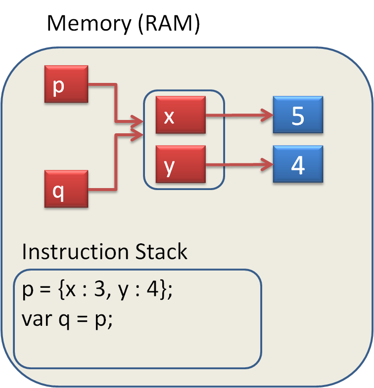
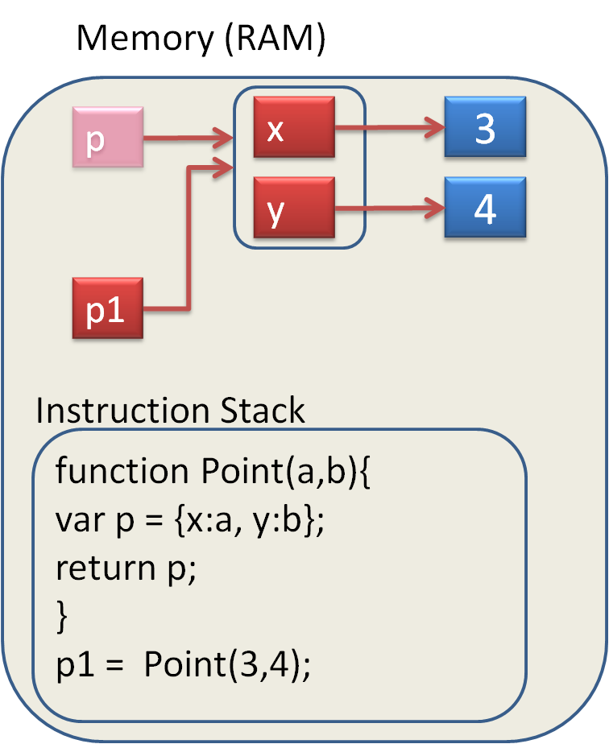

Creating Objects
We can create an object as shown below.
This object created this way is called a 'literal' object. Here 'p' is the name of the object and 'x' and 'y' are called 'properties'. We also say 'p' is a reference to the object.
Copy the code into your Chrome Console and edit the values of the properties of 'p' and 'q'. Change the value of p.x and write out the values of p.x and p.y and q.x and q.y to convince yourself that p and q reference the same object.
Create another literal object with properties 'name' and 'age' where name is your first name and age is your age. Write out these properties then change your age to something different.
Using the 'dot' notation we can reference the x and y 'properties' of the object and we can 'get' or 'set' those variables.
Lets convince ourselves that 'a' has its own memory slot and is independent of p.x. Can you draw out the layout in memory?
Here is the memory layout.
 Now lets create a variable 'q' and assign 'p' to it. Why does q.x change value
Now lets create a variable 'q' and assign 'p' to it. Why does q.x change value
Here is the memory layout. We call 'q' a reference to the object. Indeed, both 'p' and 'q' reference the same object.

We can have many references to the same object.
Suppose we want to create several Point objects. One way is shown below. Can you create your own object? Can you imagine the memory layout diagram?
Here we have seen that when we create a new 'name', such as 'var a' and follow it by an 'assignment' such as 'var a = p;', the result in Javascript depends on whether 'p' is a value, such as 5, or an object such as {x:4, y:5}. When an object is passed as an argument into a function it is the "reference" to the object that is being passed. Even though the function makes a "copy" of the reference, it still points to the same memory (the same object). This means that if we modify the contents of the object in the function we are "operating" on the actual object. There can be many "references" pointing to the same object.
Creating Objects
We can also create an object by creating it within a function and then returning the reference to it.
Notice that the reference p created in the Point function disappears once we return from the function. However, p1 references the object and so the object continues to exist and we have a reference to it. ie p1

We can make the Point function more compact by having the object created in the return statement. This avoids having to create the temporary variable 'p'. Notice also that in {x:x, y:y} the first x is the name of the property and the second x is the argument that has been passed in. ie 3
Now we can create multiple Point objects. Our function Point acts like a little "factory" that can make Point objects. Why don't you make one with the coordinates (7,9).
Change the values of the properties of p1 and convince yourself that the properties of p1 are independent of the properties of p2. This means that p1 and p2 reference different Point objects.
Try this
Type this code into your Chrome Console. What is the value of 'a' and 'p1.x' after Calc() has been executed.